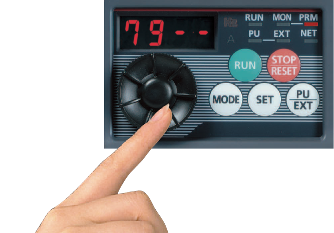
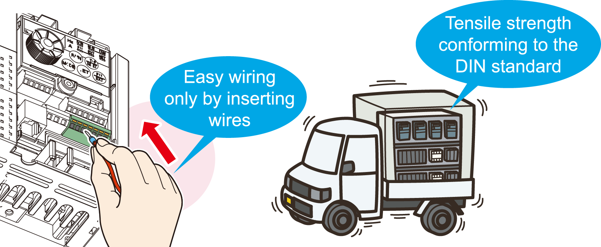
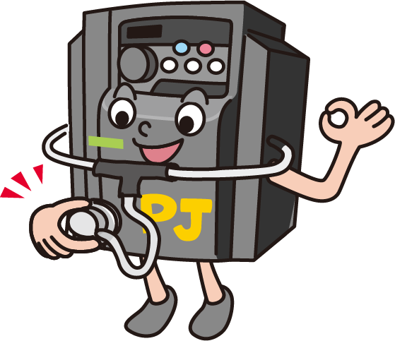

Inverters-FREQROL-F Series -FREQROL-F700PJ- Pengoperasian dan Perawatan Mudah

Pengaturan cepat menggunakan tombol pengaturan
- Tombol pengaturan kecepatan gulir yang dapat disesuaikan memungkinkan lompatan cepat atau penambahan yang tepat berdasarkan kecepatan putar.
- Pelapis antiselip diaplikasikan pada tombol pengaturan agar putaran lebih mudah.

Pengaturan parameter otomatis untuk aplikasi tertentu
- Pengaturan parameter sederhana (Pr.79 Pemilihan mode operasi)
- Pengaturan komunikasi untuk Mitsubishi HMI (GOT)
- Perubahan frekuensi terukur (60Hz → 50Hz)
Terminal penjepit pegas (terminal rangkaian kontrol)
Terminal penjepit pegas*1 diadopsi sebagai terminal rangkaian kontrol. Terminal penjepit pegas sangat andal dan dapat dengan mudah disambungkan dengan kabel.
*1Terminal rangkaian kontrol adalah terminal sekrup.

Komponen dengan masa pakai lebih lama
- Masa pakai kipas pendingin kini 10 tahun*2. Masa pakai dapat diperpanjang lebih lanjut dengan kontrol ON/OFF kipas pendingin.
- Kapasitor dengan masa pakai desain 10 tahun*2*3 disesuaikan. (Suhu udara sekitar 105°C selama 5000 jam). Dengan kapasitor ini, masa pakai inverter semakin diperpanjang.
- *1Suhu udara sekitar: Rata-rata tahunan 40°C (bebas dari gas korosif, gas mudah terbakar, kabut minyak, debu, dan kotoran).
Masa pakai desain adalah nilai yang dihitung dan bukan masa pakai produk yang dijamin. - *2Arus keluaran: 80% dari nilai inverter.
Fungsi diagnosis kehidupan terdepan
- Tingkat kerusakan kapasitor sirkuit utama, kapasitor sirkuit kontrol, dan sirkuit pembatas arus masuk dapat didiagnosis pada monitor.
- Dengan menggunakan fungsi diagnosis mandiri, peringatan masa pakai komponen*4 dapat dikeluarkan. Dengan peringatan ini, fungsi diagnosis mandiri mencegah terjadinya masalah.
- *4Peringatan akan dikeluarkan saat kapasitor sirkuit utama, kapasitor sirkuit kontrol, sirkuit pembatas arus masuk, dan kipas pendingin mencapai level output yang ditentukan.

Fungsi komunikasi yang ditingkatkan
- Protokol inverter Mitsubishi dan MODBUS®RTU dapat dipilih.
- Kecepatan komunikasi RS-485 telah ditingkatkan.
(Komunikasi pada 38,4kbps tersedia.)